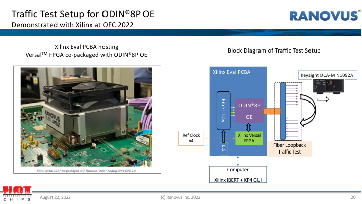

本地模块资料，已经提出了哪些制造任务？
中际旭创和新易盛的部分 2FR4 产品使用 EML 与波分光路；新易盛的 VR8 使用 VCSEL 与并行光路；光迅和联特的资料还出现了硅光、薄膜铌酸锂等方案。这些选择会改变要制造的光学结构、要接好的接口和需要检查的信号。
| 本地收录的公司与产品 | 配置已经说明什么 | 继续追到哪项制造任务 |
|---|---|---|
| 中际旭创 800G 2×FR4 OSFP112；新易盛 800G 2FR4 | EML 发射；两组四波长合分波。 | 先形成发光与调制结构，再把各波长接入合分波光路。沿材料与芯片、光学组件继续看。 |
| 新易盛 800G VR8 | 8 路 850 nm VCSEL；并行光路与 MPO-16/APC。 | 组织多路发光与多纤连接，逐通道检查对准和传输；这项配置按并行方式组织光路。 |
| 光迅 1.6T 2FR4，RTXM700-532 | 硅光 CWDM 发射；双组 LC 双工接口。 | 在芯片上形成所需光子结构，再接好供光、电连接与光纤；波分还需要合分波功能。 |
| 联特 800G OSFP 2DR4 TFLN 产品族 | 采用薄膜铌酸锂调制平台，年报列出该产品族。 | 把调制结构与光源、驱动及光纤配套。后文分别看本地调制器、光引擎和装配资料。 |
| 剑桥 800G DR8 SiPh LPO，TLD5J0APNFDMF000 | 连续光源配合硅光；线性电接口，无模块 DSP。 | 供光和调制分开连接；电路与主机通道共同决定信号能否正确传送。接到电路与光引擎继续解释。 |
下面先沿材料、芯片和光学件追到光引擎，再把电路载体、装配与测试接进来。每个环节都使用本地已有的公司产品或工序记录，制造方法在需要时展开。
箭头表示本页追踪的对象变化。材料、芯片、光学件和电路板有各自的制造支路，在相应装配阶段汇合。
这几款产品的本地记录与来源
本地产品卡 R01、R31、R32、R35、R43、R54，来源为第三篇对应型号与产品族记录；本段制造任务是根据所列配置解释的工作目的。
中际旭创 OSFP112 产品页；新易盛 2FR4 简报，第 1 页；新易盛 VR8 简报，第 1 页；光迅 RTXM700-532；联特 2025 年报，印刷第 12–13 页；剑桥 Photonics 型号页。
联特条目是年报产品族，未列独立料号；集团或产品族的量产表述不在这里转换为各配置的当前量产结论。本轮重组使用本地已收录资料，未将其视为刚刚重新核实的最新状态。
材料 → 光芯片 → 可装配的器件
本地公司怎样把材料做成光芯片？
模块装配需要拿到能发光、调制或接收光的芯片。把这些芯片向上追，会遇到三种交付物：用于开始加工的材料、已经形成光电结构的芯片，以及带有封装的器件。它们对应的后续工作不同。
源杰主要向客户销售激光器芯片，也会为部分客户封装后销售。这个区别给出了本节的起点：同样是购买激光器，拿到裸片的客户还要安排芯片装配；拿到封装器件的客户，则从该器件提供的接口继续连接。
先准备底片和生长原料，再长出功能材料层
芯片的制造需要从一片晶圆开始。云南鑫耀生产砷化镓（GaAs）和磷化铟（InP）晶片，也叫衬底。衬底提供后续加工的基础；在它上面继续生长设计要求的晶体层，叫外延。长出的材料层，再接受后面的图形加工。
外延还要使用反应原料。江苏南大光电的产品记录列有磷烷、三甲基铟和三甲基镓；南大光电的另一条披露说明，MO 源系列是制造半导体激光器等产品的原材料。这里可以分清两个投入：衬底是接受生长的底片，原料用来形成后续所需的材料层。
云南鑫耀 GaAs / InP 衬底；江苏南大光电原料；MO 源的半导体激光器用途
晶圆还要继续加工，才能成为一种确定的光芯片
源杰的生产线把外延和后续芯片工序接在一起。其年报披露，多条生产线覆盖 MOCVD 外延生长、光栅工艺等环节。MOCVD 是外延生长的一种方法；光栅工艺继续形成芯片所需的结构。前一项工作的产物，成为后一项工作的加工对象，最后交付给客户的是激光器芯片或相应封装产品。
仕佳的 DFB 产品把“要做什么芯片”说得更具体。公司披露的 DFB 工艺线包含外延生长，并掌握多量子阱有源区设计和 MOCVD 外延。多量子阱是为发光等功能安排的薄层结构。材料层的设计与生长先服务于发光，后续晶圆加工再形成这类激光器所需的结构与接点。
这两家公司都把外延放在自身芯片制造流程中。读到“具备外延能力”，在这里应理解为它们能完成芯片制造中的这道工序。后面的产品交付仍要看它们销售的芯片或器件。
源杰 MOCVD 外延与光栅工艺生产线 · 2025 年报；仕佳 DFB 芯片及制造工序 · 2025 年报
形成哪一种芯片，决定下一步还要给它接什么
芯片做好后，制造与装配的交接要回到功能上。仕佳的连续波 DFB 光源用于数据中心硅光；光源提供持续的光，下一段调制结构再把数据加载上去。公司在 2025 年报中将这类光源及器件记为小批量供货。
永鼎则同时列出 70 mW、100 mW CW-DFB 和 100G EML，并披露推进这些产品的批量化生产与性能迭代。CW-DFB 与 EML 交付给后续装配的功能不同，因此即使都叫激光器，也不能按相同方式接完整条发送链。
| 交付给下一环节什么 | 已经承担的功能 | 后面需要继续接什么 |
|---|---|---|
| 仕佳 CWDFB、永鼎 CW-DFB 这类连续波光源 | 提供持续的光 | 供光电路与出光接口；在采用外部调制的设计中，把光交给调制结构。 |
| 永鼎 100G EML 这类器件 | 器件内的激光段供光，调制段改变光强 | 激光段供电、调制段驱动，以及输出端的光连接。 |
| 长光华芯列出的 PIN 探测芯片 | 接收光并产生电流 | 接收光路与电流放大电路，再把信号交给后续电子电路。 |
长光华芯还披露了 VCSEL、DFB、EML、PIN 四类光通信芯片，以及包含 GaAs、InP 的制造平台。这个组合说明，一家芯片企业可以交付发送端和接收端的不同对象。选芯片时仍要逐一确定功能；“光芯片”这个总称不会替我们完成连接设计。
仕佳 CWDFB 光源；永鼎 CW-DFB / 100G EML · 2025 年报；长光华芯芯片产品 / 制造平台 · 2025 年报
芯片交给装配之前，先确认它完成了哪项功能
回到源杰“芯片销售”和“封装后销售”的区别：封装会增加芯片与载体、电路、散热支撑之间的连接。连接后的器件还要检查光、电能否按要求进出。这样，下一家接手时，才能围绕明确的输入和输出继续做光组件。
从工程目的看，检查应跟着交付物变化。下表解释各阶段为什么测量；后面的展开说明给出历史器件的具体制造与测量例子。
| 交接对象 | 需要确认什么 | 它帮助下一步判断什么 |
|---|---|---|
| 加工出的材料层与芯片结构 | 材料层、图形和接点是否符合设计要求 | 继续接电、通光时，是否具备所需结构。 |
| 能接电的激光或调制器件 | 发光是否正常；改变调制电输入时，光输出是否相应变化 | 光源和调制两项功能是否成立。 |
| 装到载体或封装中的器件 | 连接后的光输出、高速响应及温度变化下的表现 | 器件是否适合继续接入目标光路和驱动电路。 |
现在交接的对象清楚了：材料企业交付衬底和加工原料；源杰、仕佳等企业完成相应芯片工序；芯片或封装器件再进入装配。下一步要把它的光口接到滤片、波导或光纤，并让每一路光到达正确位置。
制造方法展开：用 NTT 历史 EML 看材料层、波导和电接点怎样形成
器件专题 · 从新易盛 800G 2FR4 的 EML 发射器进入
EML 的发光段和调制段，怎样从材料做成器件？
第三篇的新易盛 800G 2FR4列出 8 路 EML 发射。每路 EML 都要先产生光，再按数据改变光强。现在往制造环节走一步：这两项功能怎样做在同一个器件中？
下面采用 NTT 在 2010 年公开的 1.55 μm、10 / 40 Gb/s EML，观察材料加工怎样形成两段结构。它是解释制造动作的历史实例；R31 提供本节的问题入口。来源与实例范围放在本节末尾。
先长出功能所需的材料，再决定哪些材料留在哪一段
制造从一片磷化铟（InP）衬底开始。衬底承接后续生长的晶体层。外延就是在它上面继续生长所需晶体层的过程。NTT 的功能层采用多量子阱结构：可以先把它理解为按设计排列的薄层，用来实现发光或吸收光。
两段要完成不同任务，所需材料结构也要分别安排。NTT 给出了下表中的两种做法。两种结构后续都还要生长包覆层。
| 同样要得到两段结构 | 材料怎样准备 | 带来的制造差别 |
|---|---|---|
| 双波导结构 TWG | 先长出激光与调制所需的层，再局部去除激光层。 | 可以省去调制段功能层的再生长。 |
| 对接结构 BJ | 先长激光层；在调制区去除后，再补长该区的功能层。 | 增加一次局部再生长，也给两段材料的分别设计留下空间。 |
这两行比较 NTT 的结构实例。同样叫 EML，内部结构的选择也会改变工序。依据 NTT 2010，第 2 节及图 2。
这里交出的是具有两段材料结构的晶圆。下一步要在它上面加工光路。阅读工艺图时，可以沿着光的方向看：激光区留下什么，调制区留下什么，两区怎样衔接。
刻出光路，再给两段分别留下电接点
材料层需要加工成能导光的形状。NTT 通过干法和湿法刻蚀形成脊形波导；也就是去掉指定区域的材料，留下引导光的结构。随后保护并填平表面，再制作两段各自的电接点。实例用称为 BCB 的材料做表面平坦化，降低接点区域对高速信号的电容影响。
这一步交付的结构，要同时让光按设计传播，让电信号作用到正确的区域。理解检查目的时，可以把这两件事分开：先确认激光段能输出光，再改变调制段的电输入，观察光强是否相应变化。这样才能区分“没有光”和“有光但不能正确调制”。
从晶圆分出器件，处理出光端面，再接到载体
NTT 随后减薄并解理晶圆，分出器件。激光侧端面镀高反射膜，调制器输出侧镀减反射膜。器件再装到氮化铝（AlN）散热载体上，采用蝶形封装。到这里，下一道装配接到的是一只具有光输出端、电接点和散热支撑的器件。
端面、载体和电接点分别服务于光、热和电。后续模块装配必须把这三种连接接好。尤其是出光端，还要与下一段光路对准：器件能够发光，只完成了光连接的起点。
检查跟着交接物走：先看结构，再看功能，最后看高速传输
下面按工程目的整理检查：结构检查针对刚加工出的对象；功能和高速测量再检查它能否工作。NTT 的器件性能测量提供了其中的实例，结构检查与阶段安排是教学归纳。
| 手里有什么 | 这时要回答的问题 | 怎样看结果 |
|---|---|---|
| 两段材料和波导结构 | 该保留、去除和连接的区域，是否按设计形成？ | 结构与图形检查关注分区、尺寸和表面；它们帮助解释后面的光电表现。 |
| 能分别接电的 EML | 能否发光？调制段能让输出光强改变多少？ | 测光功率，再改变 EAM 偏压测光强变化。强、弱状态的光功率之比称为消光比。 |
| 接入封装电路的器件 | 电信号变快后，光是否仍跟得上？接口反射是否影响信号？ | 测电到光的频率响应及电端口反射。NTT 的图 7 分别展示这两项测量。 |
| 器件接入传输链路 | 发出的数据能否在另一端正确读出？ | 发送约定的测试数据，记录驱动、温度、光纤和接收条件，再看误码表现。 |
这些检查逐层缩小问题所在：结构不符合设计，要回到加工；光强不随电输入变化，要检查调制；高速传输失败，还要检查驱动、封装连接和整条链路。
材料商和设备厂，分别交付哪一步所需的东西？
沿着上面的对象变化，第三篇中的公司条目就有了具体用途。AXT 交付起始材料；AIXTRON 和 Oxford Instruments 提供加工设备。下表按原厂公布的能力对应任务。
| 制造任务 | 具体产品与能力 | 交接到哪里 |
|---|---|---|
| 准备承接晶体生长的衬底 | AXT InP 衬底：供应磷化铟晶圆，有不同尺寸和掺杂选项。原厂产品 | 衬底进入外延环节；功能材料层在后续加工中形成。 |
| 生长所需晶体层 | AIXTRON G10-AsP：利用气体原料生长 GaAs / InP 材料层的 MOCVD 设备，支持自动晶圆装载和外延生长。回看第三篇公司资料 | 得到外延片，再按器件设计进行局部加工。 |
| 按图形去除材料，形成导光结构 | Oxford PlasmaPro 100 Cobra ICP RIE：原厂列出 InP 激光器刻蚀应用，并展示 InP 波导刻蚀能力。回看第三篇公司资料 | 刻出的结构继续接受表面、电接点及后续加工。 |
这样看公司，关注点就很具体：它交付一片材料，还是一台执行特定动作的设备；它接收什么对象，又把什么交给下一步。设备与材料要结合器件设计选择，才能组成实际制造流程。
带走这一点：EML 制造把两项功能落实为两段材料、相连的光路和各自的电接点。分片与封装随后把它变成可接入系统的器件。接下来要解决的是：怎样把器件输出的光接好，以及是否需要合波。
本节来源、图表位置与实例范围
新易盛 800G 2FR4 产品简报，第 1 页 Product Description：8 路 EML、驱动与合分波组成。文件名使用 EOLO-168HG-02-XX，PDF 内部订货型号为 EOLO-168HG-02-1。本节没有把 NTT 的材料、封装或设备能力当成该模块的制造配方。
NTT：Uncooled Operation of 10-/40-Gbit/s 1.55-μm Electroabsorption Modulator Integrated with Distributed Feedback Laser，2010 年 8 月。第 2 节 Device fabrication、图 2–3：TWG / BJ、MOVPE、脊波导、BCB、端面处理与 AlN 载体；第 3–4 节及图 7–8：静态、高速及传输测量。这是 1.55 μm 历史器件实例，文中测试条件只适用于所测器件。检查表中的分阶段安排是教学归纳，具体限值须由相应产品设计规定。
AXT Products，InP 产品项；AIXTRON G10-AsP，Fully Automated MOCVD 与 Cassette-to-Cassette Wafer Handling；Oxford ICP RIE，Applications of ICP RIE 与 Applications for PlasmaPro 100 Cobra。三项用于说明材料或设备能力，没有建立其与 NTT 2010 器件或 R31 的采用、供货关系。
公司资料、原记录与本节解释范围
本节公司信息取自当前本地产品目录及 points 原句。PVIEW 链接返回第三篇对应交付物，P 编号用于定位原记录。各公司在文中按工序和交付物排列；没有把它们写成某款模块的实际采购链。
材料：云南鑫耀 P202，母公司 2025 年报摘录；第三篇 GaAs 与 InP 条目保留原来源。江苏南大光电 P044 来自客户招股书供应商表，列磷烷、三甲基铟、三甲基镓；南大光电 P152 的 MO 源自述说明半导体激光器用途。材料品目没有被指定为上文某家芯片厂某款产品的实际配方。
源杰：2025 年报，P095“多条覆盖 MOCVD 外延生长、光栅工艺……的生产线”；P167“主要销售激光器芯片，部分按客户需求封装后销售”。仕佳：2025 年报，P094 的 DFB 外延工艺线、MQW 设计和 MOCVD；P141 区分接入网 DFB 稳定批量供货与硅光 CWDFB 小批量供货。内制外延工序不作为外延片外售的证明。
永鼎：2025 年报，P165 的 70/100 mW CW-DFB 和 100G EML。长光华芯：2025 年报，P096 的材料体系及制造平台、P097 的四类光通信芯片。产品集合的订单或产能表述不逐项扩展成每种芯片的当前交付规模。
外延、芯片功能、封装交接与检查目的承接前篇原理及下方工艺资料。表中连接任务按功能解释，没有补入具体 Driver、TIA 或模块型号；检查表没有被写成上述公司的实测数据或量产验收规程。
本节引用的本地记录与原始资料
以下保留本地条目和原记录标识，便于核对。标为第三篇线索的条目按旧线索读取；后续补充的产品、工序或关系，以相邻的具名原始资料为依据。
源杰：芯片封装销售产品 · P167 · 2025 年报
云南鑫耀 GaAs / InP 衬底 · P202；江苏南大光电原料 · P044；MO 源的半导体激光器用途 · P152
源杰 MOCVD 外延与光栅工艺生产线 · P095 · 2025 年报；仕佳 DFB 芯片及制造工序 · P094/P141 · 2025 年报
仕佳 CWDFB 光源 · P141；永鼎 CW-DFB / 100G EML · P165 · 2025 年报；长光华芯芯片产品 / 制造平台 · P096/P097 · 2025 年报
光芯片与光学件 → 接口相连的光组件
从芯片、滤片到光学组件，还要接好什么？
上一节交付了能发光或接收光的芯片。它们需要继续连接光路。波分方案还要把不同波长汇到同一条光路，再在接收端分开；并行方案则让各路分别传送。两种方案都要让相邻器件的光口与光纤配合。
本地公司资料已经能把这些工作拆到实际交付物：仕佳的 AWG 芯片用于按波长分配光，腾景的 CWDM 滤光片用于选择波长；炬光的 V 型槽帮助定位光纤；天孚、光库等公司的阵列、透镜和封装配套，则把光路继续接起来。
先形成合分波的功能，再把各端口接出来
仕佳交付的 AWG 芯片，先把按波长分配光的功能做在芯片上。AWG 利用波导网络把不同波长引到相应端口。这个芯片进入组件装配后，还要获得支撑，并与输入、输出光路相连，才能把片内功能交给外部系统。
天孚将 AWG 列为器件产品，也提供光滤波片、Filter Block 和 WDM 器件。对制造分工来说，AWG 芯片与合分波器件处于不同交付层级：前者提供片内结构，后者围绕相应结构组织器件。向模块装配交接时，要把光从哪里进入、从哪些端口输出说明清楚。
仕佳 AWG 芯片；天孚 AWG 器件 / 滤波及 WDM 产品 · 2025 年报
腾景的高速光模块 CWDM 滤光片对应另一种加工对象。滤光片依靠光学薄膜选择透过或反射的波长。使用独立滤片构成光路时，要将它与相邻零件按位置和角度装好，使各波长到达目标端口。这里继续加工和装配的是镀膜光学件，而 AWG 路线先在芯片上加工波导。
腾景还交付非球面透镜。透镜用于调整光束，是连接相邻光路的一种零件；它与选择波长的滤光片承担不同功能。把透镜和滤片都称为“光学件”，还需要继续分清每个零件怎样影响光。
腾景 CWDM 滤光片 / 非球面透镜等产品 · 2025 年报。AWG 与薄膜的具体加工方法见本节展开说明。
| 装配拿到什么 | 已经具备什么 | 还要完成哪种连接 |
|---|---|---|
| AWG 芯片 | 片内按波长分配光的结构 | 芯片承载及输入、输出端口的光路连接。 |
| CWDM 滤光片 | 按设计透过或反射不同波长的能力 | 滤片的位置、角度与固定，以及各光束的进出路径。 |
| 透镜 | 设计好的光学曲面 | 把它放到合适位置，调整光束，使光进入目标接口。 |
因此，合分波功能的检查要看波长与端口是否对应；连接的检查要看光在接口处损失多少。一个组件可以同时需要这两种检查。
多路光纤先排成阵列，再把阵列与芯片对准
一根光纤可以单独定位；多根光纤一起连接时，还要保持彼此之间的间距。炬光的 V 型槽阵列就是为这项工作提供定位结构。公司披露精密加工的 V 型槽用于光纤阵列定位与固定，应用包括 PLC 分路器、AWG 和 FAU。槽先约束各根光纤的位置，后续装配再把这组光纤接向目标端口。
继续往下看，光纤阵列 FAU已把多根光纤组织成一个连接对象。仕佳披露了 MT-FA 和高通道 FAU；光库的光纤阵列用于高速模块、相干模块及 WSS。天孚则建立了 FAU 设计制造平台，并将其与并行光学、高速光引擎设计封装平台并列。
这些交付物前后承担不同工作：V 型槽提供几何位置，阵列组织多根光纤，装配再将阵列与芯片或其他光学件对准。检查也随之改变——先测光纤排布，再通光检查各路连接，固定以后再看结果是否保持。
炬光 V 型槽阵列 · 2025 年报；仕佳 MT-FA / FAU；光库光纤阵列；天孚 FAU 平台
从内部光连接走到外部接口，还要定位与封装引出
光库的产品目录还列有光纤透镜和单芯、多芯光纤密封节。它们提供了两个不同的连接对象：前者在光纤接口处处理光束，后者服务于封装中的光纤引出。一个零件解决光怎样进入接口，另一个让光纤穿过封装边界。安排光路时，要分别处理这些位置。
外部多纤连接又会遇到插芯。太辰光的陶瓷插芯和 MT 插芯用于保证光纤定位；福可喜玛同时交付 MT 插芯和导向针。插芯组织光纤位置，配合定位零件完成连接端的对接。因此，阵列装到芯片、光纤穿出封装、外部连接器对接，是一条光路上可以分别安排的连接任务。
光库光纤透镜 / 光纤密封节 · 2025 年报；太辰光陶瓷插芯 / MT 插芯；福可喜玛 MT 插芯与导向针
组件交付前，怎样分清光学功能和装配效果？
假设合波组件有一路输出偏弱。问题可能来自滤片或波导本身，也可能来自某个接口没有接好。制造交接时保留各阶段的测量，就能逐段比较，而不只看最后一个输出值。
| 这时检查什么对象 | 观察什么 | 交给下一步的作用 |
|---|---|---|
| AWG 或滤光片的光学功能 | 改变输入波长，观察各端口输出；看目标波长的损耗及进入其他通道的光。 | 确认按波长分配光的功能，便于与装配后的结果比较。 |
| V 槽、光纤阵列及连接定位 | 测几何位置，再通光检查每路耦合效果。 | 区分排布偏差与实际光连接的损耗。 |
| 固定后的光学组件 | 比较固定前后光功率，按产品要求检查温度等条件变化下的表现。 | 确认已建立的连接能在后续工作条件下保持。 |
表中说明检查目的；各产品采用什么仪表、条件和合格值，要落实到相应设计。接下来的装配与测试章节，将把这些对象交给具体设备和制造服务。
公司分工现在对应到实物：芯片和滤片先提供光学功能；V 槽、阵列、透镜和插芯控制各处连接；组件装配把它们接成可用光路。比较公司产品时，先看它交付到哪一层，再看下一家还需要完成哪些动作。
制造方法展开：镀膜、波导加工、光纤定位与通光检查
光路专题 · 从 2FR4 波分与 VR8 并行的差别进入
光已经产生了，怎样合波、接入光纤并检查连接？
第三篇有两款能接着对照的产品。新易盛 800G 2FR4把 8 路 EML 分为两组，每组四个波长，通过合波器共用光纤；接收方向再分波。800G VR8使用 8 路 850 nm VCSEL，通过 MPO-16/APC 连接多模光纤，各路并行传送。
两款都要把光接入光纤；2FR4 还要把不同波长组织到共用的光路。把器件输出的光有效送进下一段光路，叫耦合。把不同波长汇到共同端口，叫合波；反向分开这些波长，叫分波。它们在一次装配中可以相互衔接，却分别解决不同问题。
先把合分波器做出来：两类结构对应两类加工对象
知道产品有合波器，下一层要认识它怎样选择波长。下面用独立薄膜滤光片和芯片波导各举一个例子。两种结构都能实现合分波，但制造时处理的对象不同。R31 的简报说明了合分波功能，本节用这些公开实例解释它可能对应的制造任务。
薄膜滤光片：先镀出选择波长的薄膜，再把零件排成光路
薄膜滤光片（TFF）在透明基底上镀多层光学膜。膜层设计使指定波长透过或反射。制造先控制膜层，再检查滤光片的光谱响应：哪些波长能通过，哪些被挡住，以及通带是否落在要求的位置。
滤光片做好后，还要与其他光学件按位置和角度固定起来。例如，Coherent 的 CWDM 组件采用安装在光学平台上的级联薄膜滤光片。光依次经过这些零件，按波长分到目标端口，或从不同端口汇到一起。到这一步，交付物才从一片滤光片变为能接入光路的多端口组件。
镀膜能力例：VIAVI Coating Processes 的蒸发、磁控溅射与 UCP 平台。组件结构例：Coherent CWDM Modules。两项分别说明加工能力和产品结构。
阵列波导光栅：把不同长度的导光路径加工在芯片上
阵列波导光栅（AWG）利用一组不同长度的波导，让不同波长在不同输出端汇聚。这里的加工对象是芯片上的导光路径。路径长度、截面和材料性质共同影响波长与输出端口的对应关系。
NTT 的二氧化硅平面光波导实例，从硅或石英基底开始。先用火焰水解沉积形成玻璃材料层，再通过图形加工与反应离子刻蚀做出波导，并形成包覆结构。芯片分割和接口处理后，还要接上光纤。交付的组件既要在片内正确分配波长，也要让光通过芯片与光纤之间的接口。
制造平台例：NTT 2005，PDF 第 2 页；AWG 功能与平台位置：NTT 2017，第 2 节。这里讲二氧化硅平台的实例。
| 选择了哪种结构 | 主要加工与装配对象 | 交接时先检查什么 |
|---|---|---|
| 独立薄膜滤光片 | 镀膜基底 → 滤光片 → 排列并固定的光学组件 | 先看单片的波长响应，再看整个组件各端口的损耗与分波效果。 |
| 波导 AWG | 导光材料层 → 波导网络 → 接上光纤的芯片组件 | 先看波导结构及片内光路，再测各波长到哪个端口，以及接口额外损失多少光。 |
两类结构最终都要接受光学测量。单看外部 LC 或 MPO 连接器，还无法区分内部采用哪一类；沿着具体器件结构，才能继续追到镀膜、波导加工或光学件装配。
再把相邻光路接好：先控制几何位置，再确认光确实进去
合分波器、发射器和光纤都有自己的输入或输出位置。装配要使相邻接口配合。使用透镜时，透镜调整光束，再把光送向目标接口；使用光纤阵列时，先将多根光纤按固定间距排好，再把整组光纤接到芯片。下面分别看这两种零件怎样交付给装配环节。
光纤阵列 FAU的 Corning 实例包含基座、V 槽、光纤和盖板。加工基座与槽位后，排入光纤，用 UV 胶固定。阵列的相对位置先在这里建立；与芯片连接时，再调整阵列整体的位置。纤芯间距测量检查“排得对不对”，通光测量检查“接得好不好”。
透镜则先要做出设计要求的曲面。Edmund Optics 列出玻璃模压，以及研磨、抛光等制造方法。镜片交付前可用轮廓或干涉测量检查面形；装进组件后，还要看实际耦合损耗。曲面合格的镜片，如果位置或角度不合适，仍会让光偏离目标。
FAU：Corning OEM-039-AEN，第 1、2、5 页。透镜：Asphere Manufacturing Methods 与 Aspheric Lens Metrology。
对准以后还要固定，固定以后还要复测
被动对准按结构尺寸、定位特征或相机图像确定位置。主动对准则接通光路，一边移动零件，一边观察耦合光功率等测量值，寻找合适位置。ficonTEC 的实例常先用视觉预定位，缩小后续主动搜索范围。
位置找到后，要通过所选连接方法固定零件。胶固化、焊接等动作可能使位置改变，因此要观察固定过程，并在固定后复测光学效果。实际产品根据接口结构和允许误差选择方法；EML、VCSEL 或硅光这些名称，本身并不规定只能采用主动或被动对准。
分阶段测量，才能分清零件问题和连接问题
假设一组四波长发送光路装好后，有一路输出偏弱。只测最终功率，难以判断光在哪里损失。把测量放在零件、连接和完整光路三个阶段，可以逐段比较。下表归纳检查目的，判定限值由相应组件的规格确定。
| 阶段与测量对象 | 怎样接入测量 | 回答什么问题 |
|---|---|---|
| 滤光片或 AWG 的波长响应 | 输入可改变波长的光，记录各输出端口的光功率。 | 目标波长能否到达目标端口？损失多少光？有多少光进入其他通道？后者关系到通道隔离。 |
| 光纤、透镜与芯片的连接 | 在受控光输入下对准，记录固定前、固定过程与固定后的耦合光功率。 | 光连接是否有效？固定是否使它偏移？ |
| 装好的多通道光路 | 逐通道检查，再检查多路工作时的表现；按规格改变温度等条件。 | 各通道是否一致？波长分配、损耗和通道间影响是否满足要求？ |
| 连上发送、接收电路的整条链路 | 发送测试数据，另一端接收并比较。 | 这些光学结构与电路一起工作时，数据是否传对？ |
其中，插入损耗表示加入器件或连接后少了多少光；通道隔离说明目标通道与其他通道分得怎样。光路测量解释信号经过了什么，误码测试再检查这条路径能否完成数据传输。
把“对准并固定”落实到一项设备能力
ficonTEC ASSEMBLYLINE对应的就是光子器件精密装配。原厂平台可按任务配置精密对准与固定，并提供胶粘、共晶连接或激光焊接等方法。选择哪一种，要结合待连接的材料、接口结构和产品设计。
| 装配交给设备什么 | 平台需要完成什么动作 | 接走什么，并保留什么检查 |
|---|---|---|
| 待相连的光学件、光纤和芯片 | 识别位置、搬运零件、移动并对准；需要时用光学反馈寻找位置。 | 得到符合连接要求的位置，同时记录相关光学响应。 |
| 已对准的零件组合 | 按所选工艺固定，并监测位置或光学参数变化。 | 得到稳定连接的组件；固定后的通光检查确认连接效果。 |
设备能力：Machine Platforms 的 ASSEMBLYLINE；动作说明：Capabilities 的被动 / 主动对准与固定过程监测。光学测量任务可继续查Keysight Photonic and Optical Test。
带走这一点：选择波分后，要把“按波长合分”做成具体器件；无论并行还是波分，都要把相邻光路接通。制造把结构做出来，装配把结构接起来，分阶段测量检查每次交接是否成功。下一节将看把更多光路做进芯片后，哪些接口仍然需要装配。
本节来源、页码与实例范围
产品功能：新易盛 2FR4 V1.a 简报，第 1 页，两组四波长、8 EML、两 MUX 与两 DEMUX、双组 LC 双工接口；新易盛 VR8 V1.c 简报，第 1 页，8 路 850 nm VCSEL、MPO-16/APC、多模光纤。VR8 的型号为 EOLO-858HG-01-M。本节的 FAU、透镜、TFF 和 AWG 均为相应结构的制造实例，没有指定两款模块实际采用这些内部零件。
薄膜路线：VIAVI Coating Processes，蒸发、磁控溅射及 UCP 平台；Coherent CWDM Modules，自由空间级联薄膜滤光片结构。VIAVI 资料说明其镀膜能力，没有证明 Coherent 或新易盛采用其设备或服务。
波导路线：NTT 2005，Recent Progress in Silica-based Planar Lightwave Circuits (PLCs)，PDF 第 2 页、印刷第 13 页：硅 / 石英基底、FHD 与 RIE 加工；NTT 2017，Recent Progress in Optical Waveguide Technologies Enabling Integration of High-density Compact Photonics，第 2 节 silica PLC 与 AWG。二氧化硅平台的加工例子不覆盖所有材料平台上的 AWG。
连接零件：Corning Fiber Array Unit Series，OEM-039-AEN，2019-09-03，第 1、2、5 页：材料、纤芯间距、加工流程及芯片接口；Edmund Optics：All About Aspheric Lenses，制造方法与面形测量两节。外部连接器规格不等于内部 FAU 结构。
装配与测试：ficonTEC Machine Platforms，ASSEMBLYLINE；ficonTEC Capabilities，Motion Systems For Passive & Active Alignment；Keysight Photonic and Optical Test，功率、波长、损耗及链路测量。分阶段检查表依据这些能力与工作原理归纳，未作为 R31 / R32 的量产验收规程，也未建立其使用上述设备的关系。
公司资料、交付层级与检查范围
本节按交付物形成和连接的位置组织本地公司资料。相邻段落表示技术环节的关系，没有确认这些企业之间的采购，也没有将某个零件指定为 R31 或 R32 的内部用料。表中的后续工作是相应对象的工程解释，具体接口和工艺由设计确定。
AWG 与滤片：仕佳 P013 为招股书及 2024 年报产品摘录，回链 AWG 芯片；天孚 P107/P154 来自2025 年报，分别为 Filter / Filter Block / WDM 产品与 AWG 器件表。天孚参数表有 OCR 混排，正文没有使用其中损耗、隔离数值，也没有据“器件”名称补出具体封装。腾景 P176 来自2025 年报，列 CWDM 滤光片与非球面透镜；通用镀膜方法未指定为腾景的实际配方。
阵列与定位：炬光 P117/P169，2025 年报产品表中的 V 型槽结构、定位固定用途。仕佳 P142，2025 年报：MT-FA 部分批量应用、部分验证推广；CPO 高通道 FAU 小批量出货。天孚 P155 同一年度报告中的 FAU 与光引擎平台。上述阶段按原文保留，没有推出任一已知模块的实际采用。
光库 P145/P146，2025 年报，分别是光纤阵列应用与包含光纤透镜、光纤密封节的产品列表。太辰光 P025，2024 年报产品应用表“陶瓷插芯、MT 插芯，保证光纤定位”；福可喜玛 P266 为官网产品摘录，回链 MT 插芯与导向针 保留原始网址。没有用这些产品名称推定材料牌号、密封等级或装配尺寸。
波长响应、位置检查、固定前后通光和温度检查的目的，来自本页展开的合分波、FAU 与装配测试资料。它们作为分阶段检查的说明；本地公司摘录没有给出逐型号验收规程，因此这里不呈现公司专用合格值。
本节引用的本地记录与原始资料
以下保留本地条目和原记录标识，便于核对。标为第三篇线索的条目按旧线索读取；后续补充的产品、工序或关系，以相邻的具名原始资料为依据。
仕佳 AWG 芯片 · P013；天孚 AWG 器件 / 滤波及 WDM 产品 · P107/P154 · 2025 年报
腾景 CWDM 滤光片 / 非球面透镜等产品 · P176 · 2025 年报。AWG 与薄膜的具体加工方法见本节展开说明。
炬光 V 型槽阵列 · P117/P169 · 2025 年报；仕佳 MT-FA / FAU · P142；光库光纤阵列 · P145；天孚 FAU 平台 · P155
光库光纤透镜 / 光纤密封节 · P146 · 2025 年报；太辰光陶瓷插芯 / MT 插芯 · P025；福可喜玛 MT 插芯与导向针 · P266
从芯片走到光引擎 · 把公司产品放回连接位置
光迅、腾景、天孚和联特，分别把哪些连接做进了交付物？
光迅披露硅光芯片平台，腾景列出 EML 和硅光 COB 光引擎，天孚披露 FAU 设计制造及光引擎封装能力，联特披露 COC、光器件和光模块的制造。产品与平台能力对应到不同工作。沿着芯片、载体、光纤和模块看，可以分清哪些连接已经在组件内完成，哪些还留给下一步装配。
光迅的硅光平台：一部分光连接先做成片内结构
光迅的本地年报摘录列出硅光／SiP 芯片平台，同时列有激光器和探测器平台。把加工对象落到光子芯片后，光路由加工出的波导连接；调制和探测结构能否集成、集成多少，要看具体设计。
这种连接在晶圆加工时形成。装配人员接到的是带有光学结构和接口的芯片，随后把它与光源、电路及光纤接起来。驱动电路是否也在同一芯片内，是另一项集成选择。
光迅硅光芯片平台 · 原始资料（PDF） · 原始资料（PDF）
本地后续补充的 Ranovus 讲义提供了更具体的对照：2022 年 ODIN8P 选用 GF 45SPCLO，将光子结构与高速电子电路集成在同一芯片中。这样，一些原本跨芯片的连接转为片内连接。该版本仍需用倒装接点连接载体，用 V 槽连接光纤。
第三篇 Ranovus 线索 · 补充资料：2022 年讲义第 12、18、30 页。这里使用 2022 年实例，目录同时保留较晚代资料。
光芯片交出或接收的信号，还要由电芯片继续处理
接收端的 PIN 先把光变成电流，随后要把这股电流变成后续电路可用的电压信号。优迅的本地记录列出了高速率跨阻放大器（TIA），对应的就是这项工作。公司的前端收发电芯片还承担放大、驱动和重定时。电芯片与光芯片的接口接好后，信号才能继续送到主机。
思瑞浦的光模块控制芯片则用于激光器和调制器的电压、电流偏置。偏置用来设定器件的工作条件，高速驱动负责随数据改变电输入。放到装配中看，这些芯片需要接向不同的电接点；测试也要分别观察工作条件是否合适、数据变化能否正确传递。
优迅 TIA、前端收发电芯片 · 优迅 2025 年报；思瑞浦偏置控制芯片 · 思瑞浦 2025 年报
再接回开头的剑桥 LPO 产品：该型号列出连续光源、硅光、PIN 和线性电接口，模块内没有 DSP。理解它的电连接，要把主机与模块一起看：发送侧把主机输出交给驱动与调制结构；接收侧把探测器的电流经放大后交回主机。沿这些接口测试，才能判断连成通道后的信号质量与误码表现。
剑桥 TLD5J0APNFDMF000 · 原厂型号页。上文优迅、思瑞浦资料用于解释电芯片的任务，具体配套仍以该型号的器件资料为准。
腾景的 EML 与硅光光引擎：模块收到一组已组织起来的器件
腾景的产品摘录列出适用于可插拔模块的 EML 及硅光 COB 光引擎。COB 描述把裸片装到电路载体上的封装安排。光引擎把多个光电功能组织为一个组件，模块装配再接入它的电接口、光接口和散热接触。
两类光引擎可以承担相同的发送任务，但待连接的对象不同。理解这个差别，就能知道封装工作为什么会变。
| 从哪类器件出发 | 器件内部已经完成什么 | 封装还要接什么、检查什么 |
|---|---|---|
| EML 发射器 | 同一器件内的激光段向调制段供光 | 接上供电与驱动，再把输出光送向后续光路。检查电连接和输出光的变化。 |
| 硅光芯片 | 波导连接片上的光学结构 | 按光源配置接入供光，接驱动电信号，再接出光纤。分别检查片内响应和片外连接损耗。 |
表中解释两类器件的通用接口任务。腾景的公司资料支持产品类别及可插拔模块应用。
腾景 EML／硅光光引擎 · 腾景配套集成组件 · 原始资料（PDF）
天孚的 FAU 与封装平台：把片内光路交给外部光纤
上一节仕佳、光库的产品条目，让我们看到了实际的光纤阵列交付物。天孚的资料则披露了 FAU 光纤阵列设计制造平台，以及高速光引擎设计封装平台，说明它建立了完成相应工作的技术能力。
把 FAU 接到芯片时，要让阵列各路光纤与相应光口对上，并在固定后保持位置。几何测量检查光纤位置；通光检查光能否有效进入对应通道。芯片上集成更多功能以后，这个片内与片外的交界仍然存在，也仍需完成连接和检查。
天孚 FAU 设计制造平台 · 天孚光引擎封装平台 · 原始资料（PDF）
光纤阵列的连接和检查方法参照 Corning FAU 资料第 1、2、5 页，用于解释该类接口；未据此指定天孚采用的材料、设备或工艺。
联特的 COC 与光器件：每一级先完成自己的固定和连接
联特公开的生产对象分为 COC、光器件和光模块。COC 是芯片装到载体上形成的组件。公司披露的 COC 工序含共晶贴装、金丝键合、老化和检测；后续光器件制造还涉及贴装、键合、光耦合、温循与测试。
按这些对象理解，第一步交付可固定、可接电的芯片组件；光器件层继续完成光学连接；模块层再组织电路、光器件和外部接口。进入下一层之前，要先检查本层的连接。下一节沿这组公司公开流程，具体看工件怎样从一个工位交到另一个工位。
联特 COC 与器件制造 · 联特贴装与测试工序 · 原始资料（PDF） · 原始资料（PDF）
POET 的对照：连接也可以先做在光中介层上
POET Teralight 包括发送光引擎和接收光引擎。发送侧采用 InP-on-Silicon EML，并集成驱动与监测器件；接收侧集成探测器和 TIA。FR4 版本在发送侧合波、接收侧分波。光中介层承接各自的光路和电互连，原厂称这种组织省去组件间引线键合与有源对准。
这和 Ranovus 的同片光电集成提供了两种具体的集成位置：一个把多项功能之间的连接做在芯片内，另一个利用中介层组织多种器件。读产品时，继续追踪电、光和散热接口，就能看见集成后仍需完成的装配。
第三篇 POET 线索 · 补充资料：Teralight 产品说明。
POET 平台页另列一个 100G／400G 旧示例：器件和光纤块装到晶圆上后，先测，再封盖、密封和分割。它解释了测试可以安排在组件分割之前；这个旧示例没有替代 Teralight 的产品制造资料。
调制器单独交付时，仍要接通供光和电驱动
光库的本地资料列出 96 Gbaud、130 Gbaud 薄膜铌酸锂相干驱动调制器。本段沿这类相干器件的接口看装配：让输入光进入调制结构，并提供与数据对应的电驱动，再接出调制后的光。驱动功能可以与调制器集成，具体接线要按器件接口确定。
光库 96 Gbaud 相干驱动调制器 · 光库 130 Gbaud 相干驱动调制器 · 原始资料（PDF）
集成改变了连接完成的位置。腾景的光引擎、联特的 COC 和光器件，交付不同层级的结构；光迅的芯片平台和天孚的设计封装平台，说明相应制造能力。下一步装配从实物剩下的电、光和机械接口继续进行。
本节产品资料与方法说明的范围
光迅、腾景、天孚、光库等条目引用本地公司产品摘录，保留原记录与来源，不将原记录阶段视为新的量产核验。光迅 P088 中“自研设计、外部代工”的原锚尚待复核，因此正文仅采用平台层描述，未指定代工方。腾景 EML／硅光 COB 的完整 SKU、内部器件链和量产阶段没有由类别名称补出。
联特 N280 对应 2025 年报第 14 页的公司生产模式。它支持三类对象和相应工序；本文不把全部工序套入某一 800G／TFLN 型号。天孚 P155 支持设计制造与封装平台，接口检查方法另引公开工艺资料。光库 P143 支持调制器品类，不由 Gbaud 名称推导完整模块速率或内部驱动芯片。
Ranovus 使用 2022 年 ODIN8P 实例；POET 产品资料与旧平台示例分别引用。本节对接口任务的说明是工程解释，没有把不同公司的能力拼接成已确认采购链。
制造与测试展开：2022 ODIN8P 的平台、倒装、V 槽与演示接线
光引擎专题 · Ranovus ODIN8P，2022 年公开实例
把光路和电路做进芯片后，怎样接好光纤并验证数据？
这里跟着 2022 年公开的 ODIN8P 光引擎看制造。它承担电信号与光信号之间的转换，在下面的实例中接入演示板。完整的可插拔模块还要组织主机接口、管理、供电、散热和外部光接口。
先看信号经过哪里。再看这些功能要做成什么结构，怎样把结构接起来。检查穿插在芯片加工、装配和系统运行中。
先分清三条路径：供光、发送数据、接收数据
ODIN8P 的这套演示使用外置光源 ELS。光源先提供光；发送电路控制片上的调制器，让输出光随数据变化。片内波导引导光传播，随后把光交给光纤。供光和把数据加载到光上，由不同部分承担。
| 路径 | 信号经过哪里 | 制造时对应什么对象 |
|---|---|---|
| 供光 | 外置光源 → 光引擎的入光路径 | 光源与引擎之间的光连接 |
| 发送 | 输入电信号 → 驱动电路 → 片上调制器；光经过调制器和波导 → 输出光纤 | 驱动电路、调制结构、波导和出光接口 |
| 接收 | 输入光纤 → 片上探测器 → 接收放大电路 → 输出电信号 | 入光接口、探测结构和接收电路 |
接收端的探测器把光变成电流，跨阻放大器 TIA 再把电流变成电压信号。发送和接收各有一条路径。后面做环回测试时，用光纤把发送出口接回接收入口，检查这两条路径能否共同传对数据。
这是功能示意，省略通道分配和内部布局。供光采用讲义第 20 页的外置光源配置；片上光电结构依据第 12、30 页。讲义另列的内置光源设计放在文末来源说明中。
先做芯片：让光和电在各自的结构中传播
Ranovus 为这一代器件选择了 GlobalFoundries 的 45SPCLO 制造平台，把光子结构和处理高速信号的电路集成在一起。其材料结构采用 SOI，也就是绝缘层上的硅。讲义说明，硅波导由折射率较低的二氧化硅包围，用来约束光的传播范围。
“平台”给出了可供设计和制造使用的结构与工艺。理解怎样加工，可以把同类硅光芯片的工作拆成下面三项。表中解释通用加工方法；ODIN8P 的具体平台对应见本节公司表。
| 从什么开始 | 设备对材料做什么 | 交给下一步什么，怎样检查 |
|---|---|---|
| 有硅等材料层的晶圆 | 用图形定义和刻蚀加工导光结构 | 形成波导、分支及耦合结构。通光测量可检查光沿途损失了多少。 |
| 已形成的光路 | 在需要调制的区域加工可受电信号控制的结构。部分平台使用掩膜和离子注入形成导电区域。 | 得到能被电信号控制的光学结构。改变电输入，检查光输出是否相应变化，以及变化能有多快。 |
| 光子结构与电子电路 | 加工绝缘层、接触和金属布线 | 把驱动、调制、探测和放大连接起来，并留出对外接点。检查电连接及联合光电响应。 |
这里的材料、结构和设备各有位置：硅及绝缘层构成加工对象；波导、调制器和电路是要形成的结构；刻蚀、注入和金属加工设备完成具体动作。知道“用了硅光平台”，还需要继续看它集成了哪些结构。
芯片装起来之前，先检查哪些功能能工作
晶圆测试在芯片分割前进行，裸片测试在分割后进行。测试设备把光探针、电探针接到器件端口，施加受控输入，再记录响应。例如，向一段光路送光，可以测传输损耗；向调制结构施加电信号，可以观察光输出变化。
能在晶圆上测哪些项目，取决于探针能否接近端口。端口在芯片表面还是边缘，会改变连接方法。这样的检查有助于在继续装配前识别有问题的器件；装配后还要检查新加入的接点和光接口。
这里解释晶圆与裸片测试的通用作用。ODIN8P 的实际演示测试见后文。
芯片平台：Ranovus 讲义第 12、30 页。加工方法：AIM Photonics 平台说明、Cisco 硅光制造说明。测试方法：ficonTEC 光子器件测试。
再把芯片接到载体和光纤：电连接与光连接分别完成
芯片内的光电结构做好后，还要与外部系统接通。ODIN8P 的讲义第 18 页展示了倒装结构，以及用 V 槽定位并固定 16 根光纤的方式（被动对准）。倒装解决芯片与载体之间的连接；V 槽帮助光纤与光口对准。两者处理的接口不同。
| 装配对象 | 怎样接，交付什么 | 这类连接要检查什么 |
|---|---|---|
| 芯片与载体 | 倒装时让芯片的电接点朝向载体的对应接点，完成贴合与连接。结果是固定在载体上、能够接入电路的组件。 | 检查位置、连接质量和导通；还要观察连接后的高速电信号表现。 |
| 芯片光口与光纤 | 用 V 槽约束光纤位置，使各路光纤对准对应光路，再完成固定。结果是芯片与光纤相连的光学组件。 | 检查光纤位置，并逐通道通光测损耗。固定前后比较，可发现固定动作引起的偏移。 |
这里的“被动”指借助几何结构定位。光纤已经放入槽中，仍要通光确认连接效果。位置检查回答“装在哪里”，光学检查回答“光是否有效进入目标光路”。上表的检查项说明工程目的；ODIN8P 讲义只提供相应结构和部分性能目标。
ODIN8P 把多项光电功能做在同一芯片内，使一些功能之间的连接变成片内互连。芯片到载体、芯片到光纤的外部接口仍要装配。读到“集成”，应继续追到这些剩下的接口。
接入演示板：分别检查数据和光波形
ODIN8P 在这套演示中连接 Xilinx Versal FPGA。FPGA 是可配置的电子芯片，在这里参与测试数据的发送与接收。演示使用外置光源，电脑上的 IBERT 测试界面配合环回检查误码；光输出观测支路连接 Keysight DCA-M N1092A 光采样示波器。
| 测量路径 | 怎样连接 | 它回答什么 |
|---|---|---|
| 环回传输路 | FPGA 发出测试数据 → ODIN8P 发送路径 → 光纤环回 → ODIN8P 接收路径 → FPGA；电脑软件配合检查 | 发送的数据经过光电转换和连接后，有多少被错误地读回？ |
| 光波形观测支路 | 光输出观测支路 → Keysight DCA-M N1092A | 发出的光信号随时间怎样变化，发送波形质量怎样？ |
环回把发送、光连接和接收一起测。光波形观察则把注意力放在发送输出。两种检查互相补充：链路出现误码时，需要进一步分段检查，才能定位问题所在。

讲义随后分别展示误码结果和发送光质量结果。读结果时，要同时保留输入速率、通道和测试接线。实际量产验收还要规定温度、测试时长、抽样方式与判定值；该演示没有给出整套工厂出货规程。
这些工作分别由什么角色交付？
沿着同一个对象，可以把设计、芯片平台、装配工具和制造服务分清。公司目录提供继续查阅的入口；直接产品资料负责说明这里已经确认的对应关系。
| 角色与公司 | 交付什么 | 这里能够确认到哪一步 |
|---|---|---|
| 光引擎设计：Ranovus | 光电结构、电路设计及光引擎方案 | 2022 年讲义说明该代设计和测试。Ranovus 目录还包含较晚代资料，阅读时按版本区分。 |
| 制造平台：GlobalFoundries | 芯片设计和制造使用的工艺平台 | 讲义明确选用 45SPCLO，已有该代器件到平台的对应。GF 目录 |
| 装配与测试设备：ficonTEC | 用于对准、固定或光电测试的可配置设备 | ASSEMBLYLINE与WAFER TESTLINE说明设备能力。这里将它们用于理解任务，没有建立它们与 ODIN8P 的采购关系。 |
| 实际演示测量：Keysight | 测量光波形的仪器 | N1092A 出现在 2022 年 ODIN8P 测试图中。该证据对应到具体演示所用仪器。 |
| 后续制造合作：Jabil | 面向产品制造的服务与合作 | Ranovus 2025 年公告说明扩大 ODIN 制造的合作。这属于后续产品族资料。Jabil 目录 |
读完这个例子，可以沿着接口追制造：ODIN8P 的片内光路和电路由制造平台形成；倒装把电接口接到载体，V 槽把光纤接到光口；公开演示再用环回和光波形观察检查两种表现。理解同类制造时，还可以在装配前检查芯片、在固定后检查光接口。每种检查都要接到明确对象和阶段。
本节来源、原文位置与适用范围
- Ranovus HotChips 2022 讲义：第 12 页说明 45SPCLO 平台选择；第 18 页展示倒装与 16 纤 V 槽结构；第 20 页是 ELS 外置供光的演示接线；第 21–22 页列误码与发送测试结果；第 30 页解释 SOI、波导及光电集成。第 18 页的每连接插损小于 2 dB 是目标，所列可靠性项目也没有构成完整的合格报告。第 32 页的内置光源设计另有预装焊、测试和老化安排，未拼入本文的外置光源测试配置。
- Ranovus 与 GF Fotonix 的 2022 年公告：正文首段及 800G 样品段。补充双方平台关系，未据此列出具体工厂设备。
- AIM Photonics Low-Loss PDK的 Overview 与Cisco 硅光说明的 Basics / Manufacturing efficiency 用于解释硅光加工。AIM 平台列出的材料与可选结构没有作为 ODIN8P 材料清单使用。
- ASMPT 设备分类、ficonTEC Capabilities的 Motion Systems / Bonding、器件测试说明用于解释固定、电连接、对准与测试动作。WAFER TESTLINE 资料提供光电探针、对准与温控能力；这些均为工具能力来源。
- Corning 光纤阵列资料，第 1、2、5 页用于解释几何定位与通光检查的区别。它没有证明 ODIN8P 采用 Corning 阵列、某种胶或某台装配机。
- Keysight N1092 系列用途说明确认仪器类别为光采样示波器。环回误码检查由图中的 FPGA / IBERT 体系承担。
- POET Teralight 产品页的 Product Details 与平台技术页的晶圆级装配测试段分别引用，资料读取日期为 2026-10-07。平台的 100G / 400G、8 英寸示例未作为 Teralight 的实际工艺配方。
- Ranovus 与 Jabil，2025-03-31：正文首两段和 Jabil 引语。这是 ODIN 产品族后续制造合作，未用于判断 2022 年演示样机由谁装配。
本节引用的本地记录与原始资料
以下保留本地条目和原记录标识，便于核对。标为第三篇线索的条目按旧线索读取；后续补充的产品、工序或关系，以相邻的具名原始资料为依据。
光迅硅光芯片平台（C006；P088, P100, P147） · 原始资料（PDF） · 原始资料（PDF）
第三篇 Ranovus 线索 · 补充资料：2022 年讲义第 12、18、30 页。这里使用 2022 年实例，目录同时保留较晚代资料。
优迅 TIA、前端收发电芯片 · P014/P118 · 优迅 2025 年报；思瑞浦偏置控制芯片 · P161 · 思瑞浦 2025 年报
剑桥 TLD5J0APNFDMF000 · 原厂型号页。上文优迅、思瑞浦资料用于解释电芯片的任务，具体配套仍以该型号的器件资料为准。
腾景 EML／硅光光引擎（C074；P177） · 腾景配套集成组件（C074；P177） · 原始资料（PDF）
天孚 FAU 设计制造平台（C060；P155） · 天孚光引擎封装平台（C060；P155） · 原始资料（PDF）
光纤阵列的连接和检查方法参照 Corning FAU 资料第 1、2、5 页，用于解释该类接口；未据此指定天孚采用的材料、设备或工艺。
联特 COC 与器件制造（C122；P060, P105） · 联特贴装与测试工序（C122；补充目录） · 原始资料（PDF） · 原始资料（PDF）
第三篇 POET 线索 · 补充资料：Teralight 产品说明。
POET 平台说明：晶圆级装配与测试段；N381 的平台工艺补充记录。
光库 96 Gbaud 相干驱动调制器（C109；P143） · 光库 130 Gbaud 相干驱动调制器（C109；P143） · 原始资料（PDF）
从载体到模块 · 沿工件交接理解材料、设备和检查
芯片和光器件到齐后，怎样接成能工作的模块？
深南的 PCB、生益科技的板材、联特的芯片载体组件、仕佳的光纤阵列，分别落在制造的不同位置。下面沿联特公开的 COC、光器件和模块工序看交接，再用本地设备产品解释每个工位需要完成什么。
先准备电路载体：板材要做成有线路和接点的板
深南电路的资料把光模块列入 PCB 应用领域。PCB 给电路元件提供安装位置，用铜线路和层间连接传送电信号。板厂交付的对象已经带有线路和接点，随后才进入元件贴装。
往前追一层，生益科技列出的覆铜板和半固化片属于制板材料；南亚新材的高速板、LowDK 板材应用矩阵也包含光模块。LowDK 描述材料的介电特性类别。材料经过线路加工、层压和层间连接制作，才成为可安装电路的 PCB。这条加工关系帮助区分材料供应与电路板交付。
生益科技覆铜板 · 生益科技半固化片 · 南亚高速板材 · 原始资料（PDF） · 原始资料（PDF）
制板检查要确认线路和层间连接是否符合设计；装配后还要检查焊点、导通及高速路径表现。材料的介电参数、板的叠层和线路几何共同影响电信号传播。上述公司摘录支持产品类别与应用，不构成它们之间的供货关系，也没有指定某款模块的板材牌号。
让可测试的芯片先经过检查，再进入封装
矽电股份的本地条目列出适用于 PD、APD、VCSEL 的芯片探针测试设备，以及用于硅光晶圆测试的 12 吋探针台。前者的工件是相应光电芯片，后者可以在晶圆尚未分割时建立测试连接。
工位需要把光、电输入送到器件端口，再记录响应。ficonTEC 的 WAFER TESTLINE 与 TESTLINE 则分别列出晶圆和分割后器件的光电测试能力。区分工件层级，可以避免把芯片筛选当成模块已经通过整条链路验收。
矽电光电芯片测试设备 · 矽电硅光晶圆探针台 · ficonTEC TESTLINE · ficonTEC WAFER TESTLINE · 原始资料（PDF） · 原厂说明
这里说明设备的测试对象与能力；未认定联特或其他模块厂实际使用这些设备。各厂工艺在何处设置筛选、使用哪些阈值，须对应实际工件。
COC 工位：先固定芯片，再建立电连接
联特年报把 COC 制造列为独立一层，工序包括共晶贴装、金丝键合、老化及检测。共晶贴装将芯片连接到载体；金丝键合再把相应焊盘接通。完成后交付的是芯片与载体组成的组件，可以进入后续光器件装配。
博众精工的共晶贴片机对应前一项动作，现有年报记录称其设备在 400G／800G 光模块生产中批量应用。猎奇的光模块贴片设备也对应芯片定位和贴装任务。两家资料说明该工位有实际设备产品，未指定它们就是联特使用的机台。
联特 COC 与器件制造 · 联特贴装与测试工序 · 博众共晶贴片机 · 猎奇贴片设备 · 原始资料（PDF） · 原始资料（PDF） · 原始资料（PDF） · 原始资料（PDF）
固定位置和电连接需要分别检查。快克智能的光模块 AOI 条目列出激光器芯片偏移、金线键合缺陷和光芯片波导缺陷等检测对象。AOI 用于发现可观察的结构问题；器件是否按要求发光、接收或传输数据，还要通过电光测试确认。
光器件工位：把组件的出光口接到下一段光路
联特披露的光器件制造包含元件／COC 贴装、金丝键合、耦合、温度循环及测试。这里的交接从“芯片已固定、接点已连接”继续向前：把输出光引到后续光学件或光纤，固定后再次检查。
猎奇的耦合设备、罗博特科的光子器件集成耦合设备都面向这类微组装任务。ficonTEC ASSEMBLYLINE 的能力说明进一步列出精密对准与固定，以及可配置的胶粘、共晶键合和激光焊接。具体工件决定采用哪种固定方法。
猎奇耦合设备 · 罗博特科集成耦合设备 · ficonTEC · 原始资料（PDF） · 原始资料（PDF） · 原厂说明
耦合之前先确定相应光口的位置；连接后通光，观察损耗与各通道是否一致。固定动作可能改变位置，因此固定前后应比较光学表现。这样的检查把几何装配与实际通光接起来。上面是公开设备能力所解释的工作原理，未给联特补写某个主动或被动对准配方。
温循、老化和光电测试，各自检查不同问题
联特在光器件和模块层分别列出温循、老化、测试等工序。温循让工件反复经历温度变化，观察连接和性能是否保持；老化在规定条件下持续运行或施加应力，观察随时间出现的变化；光电测试检查规定输入下的输出表现。三类动作的条件与判定值需要随工件定义。
猎奇的老化测试设备对应持续施加条件和组织测试的工位。罗博特科列出的硅光模组／CPO 模组测试设备对应组件层测试。它们说明测试系统要围绕具体工件配置，不能凭“测试设备”一个名称把所有检查合成一项。
猎奇老化测试设备 · 罗博特科硅光／CPO 模组测试设备 · 原始资料（PDF） · 原始资料（PDF）
| 公司公开的工件层级 | 相应工序 | 怎样理解交付给下一步的对象 |
|---|---|---|
| COC | 共晶贴装、金丝键合、老化、检测 | 固定并接好电接点的芯片组件 |
| 光器件 | 贴装、键合、耦合、温循、测试 | 完成相应光路连接的器件组件 |
| 模块 | 组装、温循、老化、测试 | 电路、光器件和外部接口共同工作的产品 |
工序依据联特 2025 年报第 14 页，公司层生产模式；交付物一栏是对其层级的解释。三行保留各自工件，未将它们合成所有型号都遵循的一条固定工艺。
整模块测试还要分开发送输出、接收能力和两端联通。前面芯片合格、几何位置正确，都只能回答部分问题；把电路、光器件和光纤共同运行起来，才能检查新加入的接口是否影响整条数据路径。
Fabrinet 的制造服务：由一个承接者组织多种工序
Fabrinet 的本地服务条目明确列出 SMT、芯片贴装、引线键合、有源对准及光纤管理，用于工艺开发和原型制造。SMT 把电子元件装到电路板；贴装和键合接入芯片；光学对准和光纤管理继续完成光路及其固定。
服务商可以承接这些步骤的组合，并按客户设计组织工件和检验。它交付制造服务或客户产品，不必拥有全部芯片设计，也不能从服务范围反推出某一客户模块已经采用全部工序。这个例子把前面的材料、芯片、光器件和设备重新接回同一个制造任务。
Fabrinet 工艺开发服务 · 原厂说明 · 原厂说明
本地资料中，哪些设备关系已经落实到公司或工厂？
前面的设备产品回答“用什么工具完成动作”。本地还保存了下面三条具名采购或供货资料，可以继续回答“哪些公司已经与设备商发生关系”。它们对应到公司的制造能力，范围比具体模块型号更宽。
| 已记录的关系 | 对应制造工作 | 关系的时间和范围 |
|---|---|---|
| Nokia—AIXTRON G10-AsP | 6 英寸 InP 光子芯片制造能力 | 2025-04-01 供应商公告披露设备供给并含 Nokia 负责人引语；未对应 ICE-X 或 ICTR140 的具体产线。 |
| Lumentum—AIXTRON G10-AsP | InP 激光器和探测器扩产 | 2026-05-19 多台设备订单公告；订单记录未等同交付和验收。 |
| Coherent—Oxford Instruments | 6 英寸 InP 自动化加工与等离子刻蚀 | 2025-11-17 公告列 Sherman、Järfälla 工厂；没有给出设备型号，不能填入 PlasmaPro 100 Cobra。 |
AIXTRON 第三篇设备线索；Oxford 第三篇设备摘录。具名关系的原始公告：Nokia 公告 · Lumentum 订单公告 · Coherent 工厂供货公告。
把公司产品放到工件交接处，制造分工就具体了：板材进入制板，电路板接入元件，芯片先固定和接电，再与光路连接；每次加入新的材料或接口，都有相应检查。公司可能交付材料、组件、工具或整套制造服务。明确它交出的对象，才能继续理解下一道工序接什么、测什么。
资料范围与检查方法的依据
正文公司品目取自本地公司产品目录，保留 C、N 和原记录 ID。深南 P083、生益科技 P170、南亚 P086 支持产品类别和应用；没有把三家画成已确认供货链。未采用原版面对应关系待核的生益电子 P056／生益科技 P057 高速 PCB 工艺断言。
联特 N280 及公司层核查记录对应 2025 年报第 14 页。设备条目的精度、节拍、客户和测试参数只在原记录支持的范围内使用；没有从“800G 用途”反推光学对准精度，也没有把 AOI 当成光电性能测试。
几何定位、通光检查、电连接及分段测试的工程解释，沿用现有工艺资料：ficonTEC Capabilities、器件测试说明、ASMPT 固晶／键合设备分类。这些解释未写成国内企业已经执行的逐型号测试流程。
Fabrinet N5 是工艺开发与原型服务范围。Nokia、Lumentum、Coherent 三条关系分别按供货、订单及公司／工厂口径展示，没有绑定到本目录的模块 SKU。公司能力与原始来源之外的推断，未作为采购事实呈现。
本节引用的本地记录与原始资料
以下保留本地条目和原记录标识，便于核对。标为第三篇线索的条目按旧线索读取；后续补充的产品、工序或关系，以相邻的具名原始资料为依据。
深南光模块 PCB（C024；P083） · 原始资料（PDF）
生益科技覆铜板（C121；P170） · 生益科技半固化片（C121；P170） · 南亚高速板材（C025；P086） · 原始资料（PDF） · 原始资料（PDF）
矽电光电芯片测试设备（C081；P171） · 矽电硅光晶圆探针台（C081；P171） · ficonTEC TESTLINE（C216；ficonTEC-TESTLINE） · ficonTEC WAFER TESTLINE（C216；ficonTEC-WAFER-TESTLINE） · 原始资料（PDF） · 原厂说明
联特 COC 与器件制造（C122；P060, P105） · 联特贴装与测试工序（C122；补充目录） · 博众共晶贴片机（C043；P206） · 猎奇贴片设备（C094；P203） · 原始资料（PDF） · 原始资料（PDF） · 原始资料（PDF） · 原始资料（PDF）
快克光模块 AOI（C095；P207） · 原始资料（PDF）
猎奇耦合设备（C094；P204） · 罗博特科集成耦合设备（C030；P116, P172, P173） · ficonTEC（C216；ficonTEC-ASSEMBLYLINE） · 原始资料（PDF） · 原始资料（PDF） · 原厂说明
猎奇老化测试设备（C094；P203, P204） · 罗博特科硅光／CPO 模组测试设备（C030；P173） · 原始资料（PDF） · 原始资料（PDF）
Fabrinet 工艺开发服务（C001；产品扩展:Fabrinet） · 原厂说明 · 原厂说明
AIXTRON 第三篇设备线索；Oxford 第三篇设备摘录。具名关系的原始公告：Nokia 公告 · Lumentum 订单公告 · Coherent 工厂供货公告。
读完回看 / 把结构、动作和检查接起来
这些本地公司，怎样放到同一条制造任务链里？
回到开头的 2FR4，EML 输出的光还要按波长组织起来。仕佳 AWG、腾景滤光片和相关组件资料，就成为继续理解合分波结构的入口。再看 VR8，各路光按并行方式传送，工作重点转到多路发光器件与多纤接口的定位、连接和逐通道检查。
硅光与 TFLN 则需要继续追问光怎样进入调制结构、驱动接到哪里，以及哪些连接已在芯片或组件内完成。腾景的光引擎、光库的调制器和联特的装配工序分别提供了继续查阅的对象。到了剑桥的 LPO 配置，还要把主机与模块的电通道联起来检查。
源杰的激光器芯片、仕佳的 AWG 芯片、腾景的滤光片和光库的光纤阵列，处在不同的交付位置；天孚的平台资料说明相应设计制造和封装能力。每次接到新的实物，都要先认清它已经完成什么，再继续处理剩下的接口。
| 回到第三篇看到的产品 | 现在能说清的后续工作 |
|---|---|
| 激光器芯片、调制器、探测器 | 它完成哪项光电功能，后面需要接什么电路、光路和载体。 |
| AWG 芯片、滤光片、FAU、透镜 | 交付的是哪种零件或组件，还要完成哪些定位、固定和光学检查。 |
| 光引擎、封装平台与模块 | 哪些连接已在芯片或组件内完成，哪些接口留给下一步。 |
| 贴片、键合、耦合、AOI、老化与测试设备 | 面对哪个工件，在找什么问题，检查结果能回答到哪一步。 |
试着复述：AWG 芯片、FAU 和耦合设备，分别交付什么？
AWG 芯片提供按波长组织光的片内结构；FAU 把多根光纤按设计位置排好；耦合设备帮助这些端口对准并固定。装配还要测量接入各端口的光与损耗。知道三种产品的任务之后，才有具体问题可用于核对型号和实际制造关系。
公司资料的用途，是让每一道制造任务都有具体的产品、材料或设备可以继续追。把交付物、剩余接口和检查对象接起来，就能理解路线变化怎样影响企业承担的工作。